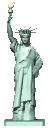

By The Waters of Babylon: The Reawakening
(An unofficial sequel to Stephen Vincent Benét’s “By the Waters of Babylon”)

We must build again.
This is what I have said, but my people did not listen. They did not listen because they did not hear. They did not hear because I did not say it to them. I said it to myself, over and over. I knew it to be true.
I also said it to my father, but he too did not listen. He did not listen to anything I had to say about the Dead Places, not anymore. He did listen once, but then he became stubborn, like a great boulder. He told me to wait.
I had waited for too long since I returned. The seconds turned to minutes, the minutes to half-hours, and the half-hours to years. My impatience burned in me like a great sun. Time passed slowly, like a snail moving along the ground. Each moment lost filled me with regret.
Even among my own people I couldn’t be at ease. Whenever I looked into their faces, all I saw was their ignorance. Their ignorance was like the ignorance of a tree branch. Deep down, though, I knew it was not their ignorance that troubled me. It was my own.
I knew there was so much more to learn from the Dead Places! In the night- I was tortured by my dreams. I wondered about the magic of the ancient people and what had become of them. There was a craving for knowledge inside of me, like a tree inside of a forest.
We must build again.
This is what I have said, over and over. But, as the ancient proverb of my people goes, “He talks the talk, and yet he does not walk the walk.” I had talked the talk. Now it was my time to walk the walk.
I left my home late in the night, drawn by fate to the Dead Places. I had thought when this day came I would be accompanied by my father and my people. This made me sad as I walked into the moonlight.
The journey was long and hard. I walked on and on, through fields, forests, and streams, over mountains, under clouds. The hot blue sun beat down upon me. In the night I slept with the birds, with the deer, with the fishes. I felt the earth. I heard the voices of the ancient people, singing, calling.
But when I finally came to the great river, everything fell silent. I felt nothing- no fear, no wonder, no revelations. I walked down the dark dead streets, but everything seemed empty. I wanted to find the statue of ASHING; to see a familiar face in the old city. I couldn’t find my way. Everything was ashes. I felt sick. I had forgotten why I even returned, I had forgotten what I was looking for. I ran to the shores of the great river and cried. There were no answers for me.
Then I saw her.
She was waist deep in the great river, off in the distant waters. She wore a beautiful long robe and a crown. I was drawn to her- I swam through the water, splashing and coughing, until I reached her. She towered above me. Her right arm was raised into the sky, and her left hand held a giant book of stone. On it was the word “JULY.” Perhaps that was her name. I climbed into her arms and slept peacefully for the night.
I was reawakened the next morning by a piercing cry. Then I looked down, and to my surprise, there was a man in the water! He looked at me and shrieked again, this time making strange gurgling noises. I saw him more closely and gasped- his skin was gray, his eyes were pale, and his neck were flaps! I remembered, long ago, my grandfather John had told me stories of the gray men with pale eyes. I had never believed them to be true, nor, I thought, did he. Nevertheless, more and more of the creatures began appearing in the water. They were all of different sizes and colors; yet somehow they all looked the same to me. They spoke to me in their strange tongue, but I understood nothing. Suddenly silence fell as the wrinkliest creature floated to the front of the crowd, and to my surprise, opened his mouth and spoke to me.
“Hello, hello, hello,” he said in a wet, gurgling voice. Another creature began making furious clicks and gasps, as if translating for the crowd. “We have no violent feelings for you, human female.”
I was shocked this creature spoke my tongue, even if he spoke it poorly. “Who are you?” I asked.
He squinted his milky eyes, trying to find the right words. “Many sorries, my english language is not groovy,” he said finally. “We are people, the people men. Our homes live under this large fluid pool. We nutritionally enhance myself through the chowdowning upon three eyed squishes.” He blinked, then shook his head, water flying out his nose. “No, no, no. Fishes, not squishes! Many apologies accepted.”
I was swimming in questions, I was unsure where to begin. “How long have you lived in this river?” I asked.
“Very much long distance,” he said. “We is the continued loinfruit of our ancesterhood, who are, semthelves, survivors from the Great Burning.”
The Great Burning! I felt a surge of hope. Perhaps these creatures could tell me the secrets I had been waiting years to know!
“What is the Great Burning? Is it the reason the city is empty and the people are dead?”
Liquid trickled out of the creature's cheek. “Indeed, señorita. Long time gone back, there was big fightings betwixt peoples. The gray men of underwaterland made wartimes with the humans of overwaterland, and versa vice. Soon we having Great Burning, causes a Great Barbecuing of everypeople! Horribubbly, terribubbly, nasty, nasty, nasty!” The creature vomited into the water in disgust.
Stunned, I sat back and looked out at the beautiful city. I felt sick as I thought of its many tragedies.
"Why," I asked, "why on Earth did they need to fight each other?"
"Ah, my child, my homeboy. Speak not of Earth."
I was confused. "Why should I not speak of Earth? It is where we all live."
The man flushed a dark gray color. "Your tongue twists flippantly, amigo!" hissed the man. "Make your screechings, irregardless, thou shalt not call our land Earth!"
"What!" I cried. I was angry now. "You talk of nonsense, of course this land is Earth!"
"He speaks the truth, John."
I looked to the sky. Floating towards me was a tall figure. He seemed familiar to me.
"Hello, John. My name is George Washington."
I realized where I had seen him before. It was ASHING, the man with hair like a woman.
"You probably are very confused. Don't worry, I'm going to explain everything, in due time."
I hadn't even realized it, but as he had floated toward me, I had floated towards him. We were now floating together, above the clouds.
"I'm sorry, John, but this planet is not Earth."
The blue sun was shining brilliantly now. Earth. I had always been told that Earth was my home. I looked down at the green hills and trees and cried.
"You see, the real Earth is many millions of lightyears away. A long time ago, that Earth was the home of humanity. But then, a large alien corporation of crab people decided your planet was perfect for their newest business venture. They wanted to exterminate your species, but, under pressure from various crab people environmental organizations, they decided to move the entirety of Earth's ecosystem to the nearest planet that could sustain your life. The problem was, when they moved everything on the new planet, they didn't understand the importance of putting things where things went. You saw yourself, the Statue of Liberty wound up in the Hudson River. But even New York, in its ruined state, was not nearly as bad as the rest of the world. Ecosystems went completely out of whack. Countries were stacked on top of each other. Those who didn’t die within the first few weeks suffered massive delirium. But perhaps the worst part, as you've seen, was that the planet was already occupied. The home of these innocent native gray water creatures were practically erased by the arrival of the humans. Much to their annoyance, these humans still called the planet Earth out of homesickness. Wars over every conflict imaginable broke out and went on for centuries, until there were not enough people left to fight them. These people drifted off into small tribes, each developing their own mythologies on the origins of the societies in which they found themselves. It's all very regrettable, but it's clear that the only people who should really be held responsible for this whole messy affair are the crab people."
I felt the weight of the reality of the universe upon me; it was unbearable. The sun was changing colors, and it horrified me. Then came thunder. I was falling, and I saw everything around me as it was. There was a loud ringing in my ears. I felt a sharp jolt, and I opened my eyes. Lightness and darkness dissolved around me, and I heard a distant, familiar voice calling me.
“Wake up, Billy!”
I sat straight up in my bed, and turned off my alarm clock. “Holy cow!” I cried. “Mommy, I just had the most amazing dream!”